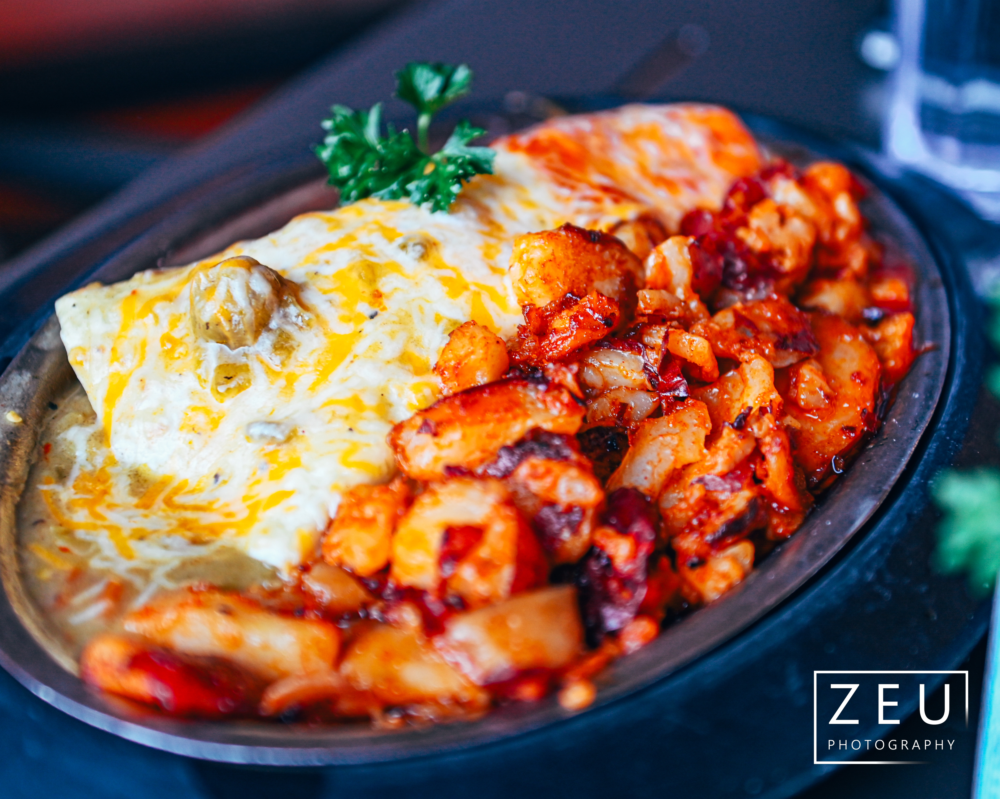
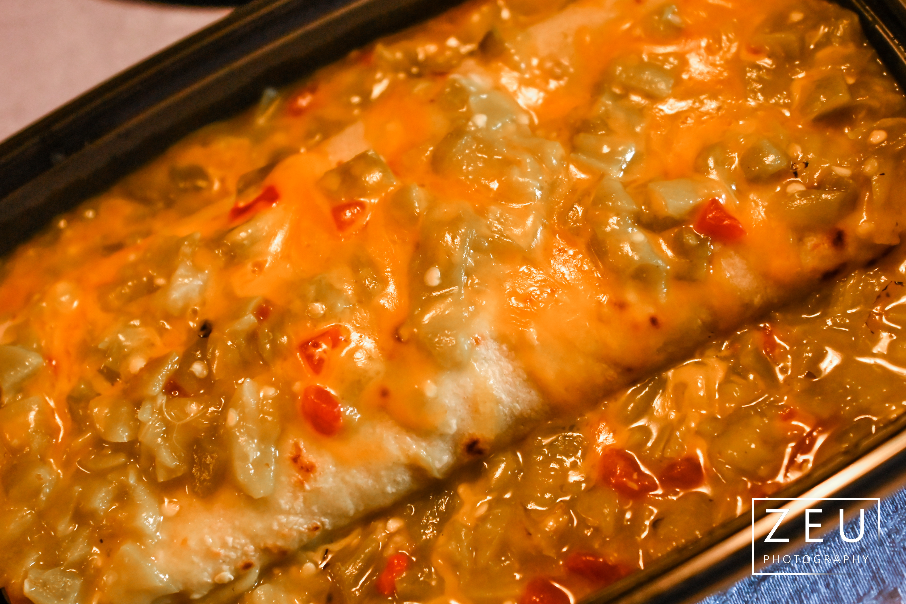
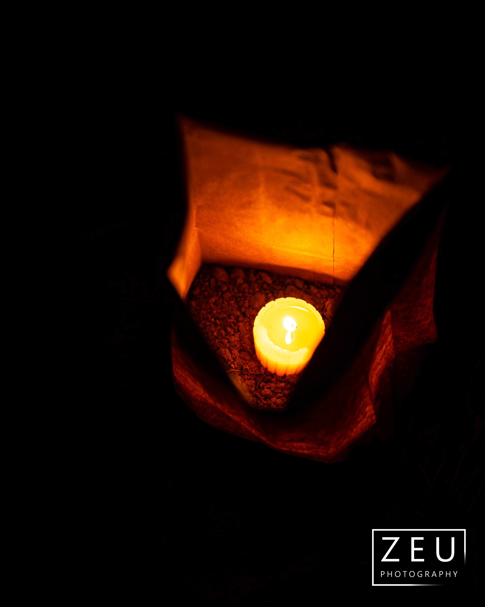
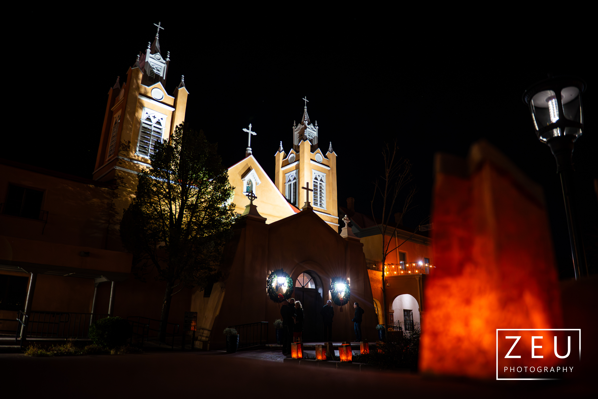

Zach Ulibarri
Santa Fe Area
- Meow Wolf - One of the coolest things around. Wild, interactive... thing. Probably best if you don't know too much about it before you go and instead walk in blind. Plan to spend an afternoon there. You won't regret it.
- Downtown - Art galleries are worth checking out, but you probably can't afford much. Really just walk around and enjoy the beautiful downtown classic NM architecture. Lots of old adobe buildings.
- San Miguel Mission - Oldest church in the USA. Beautiful, old classic adobe.
- St. Francis (Downtown) - Not nearly as old or classic, but a beautiful piece nonetheless.
- Museum of Indian Arts & Culture - Truly fantastic museum. Just be forewarned, it should really be name the Museum of Southwestern Indian Arts & Culture, as it focuses almost exclusively on that. See photos below.
Santa Fe Food
- Maria's: Get either a smothered bean and cheese burrito or a chile relleno plate smothered in green.
- The Pantry: Fantastic place for a burrito or a chile relleno plate smothered in green. See photo below.

Jemez Mountains (My Favorite Place on Earth)
- Valles Grande - Part of the Valles Caldera. Unbelievably beautiful. Great place to drive to and just relax. See below.
- Soda Dam (in the Jemez) - Very strange little rock formation right on the road.
- Battleship Rock
- Just enjoy the calm and the ponderosa pines (smell a freshly fallen green branch).
- Get fry bread at the stalls at Walatowa (across the street from the Pueblo of Jemez Welcome Center (35.645006100665235, -106.72566701676328). I bet the stalls here also have good biscochitos, although I haven't bought any there since I could always get them in ABQ.
- Jemez Historic Site - At Christmas, they have a wonderful luminaria set.
- Los Ojos Cafe in Jemez Springs serves up good food.
- Lots of hot springs
- Hiking everywhere
Bandelier National Monument
It's really old, man. Short drive from Santa Fe. Wonderful piece of native history. After seeing the main site, be sure to take the short walk to the other smaller site set into the hollow of the cliff.
Taos Area
Santa Fe is the cultural center of NM, but while it prides itself on its art galleries, it's got nothing on Taos. So much amazing western art to be found in galleries here. My favorite contemporary western artist, Mark Maggiori, lives here.
- The Taos Pueblo - If they allow you on, has the most beautiful and iconic piece of Native American architecture there is. People have lived here for a thousand years. I would rank this and Colorado's own Mesa Verde as the most important native sites to see, with Bandelier and Chaco Canyon forming a near-second tier.
- The San Francisco de Assisi Church - A mesmerizing masterpiece of simplicity. Beautiful adobe architecture. Make sure to view it from the back and see the strange bulge. You will find countless images of this angle of the church in postcards, etc., once you start noticing it.
- Rio Grande Gorge Bridge
- Just look at the mountains, man. Tallest one in the state, Wheeler Peak, is kinda sorta visible, but it is hidden by Pueblo Peak and Taos Mountain from Taos itself.
Las Vegas, NM (The OG LV)
- Go visit my 94-year old grandomother at her cowboy boot store.
Plaza boots, right on the downtown plaza. She's only open when she feels like it, but stop by if you can.
- Kocina de Raphael has great NM food across the board
- Charlie's Spic and Span has great burritos. See below
Albuquerque
(Where I'm from. My mother and brother live here.)
- Old Town - See the beautiful southwestern architecture, especially the church.
- Old Town jewelry sellers on the streets (if there are any during COVID times) are going to be 80-20 garbage vs. real Native American jewelry. Unfortunately, you can't tell by the ethnicity of the seller anymore.
- Old Town art galleries - Most are not my style. There is an interesting place called Santisima that focuses on SW Americanized Dia De Los Muertos type stuff, but really I see it as a "modern" version of a lot of classic Mexican Americana.
- Old Town gunfighters - Fun skits with blank-firing guns. Haven't seen them since I was a child, but I loved them then.
- Pueblo Cultural Center - Can get oro bread and a few other native food items. The store has an interesting collection. I get my coffee mugs from there, designed by Native artists.
- Walking the trails in the Bosque is really lovely and peaceful on a crisp cool day. It's also great for trail running that's pretty much flat. Park next to Tingley Beach or at Kit Carson Park and then walk into the woods. There are a number of trails in there. You can also go up to the edges of the Rio Grande and dip your feet in. But be careful, the river can get deep very suddenly and the current is much faster than you think. Do NOT go swimming.
- If you're a bicyclist, there are dedicated paths all over. The one next to the Bosque is great.
- The petroglyphs to the west of town are a great place for walks/light trail running.
Albuquerque Food
- Duran's Central Pharmacy - A pharmacy with a restaurant on the side that is more successful than the pharmacy: get a bean and cheese burrito with extra/double green chile. This is my favorite meal on earth. The chile will have some spice, but it's not super hot. It's more about flavor.

- Frontier on Central - A famous college-type place. Counter-served, started as a corner restaurant, ended up being so popular that they took over the storefronts one by one until they are a single restaurant taking up one side of a block: get a vegetarian burrito.
- Stuffy's - Stuffed sopapillas: get a ground beef stuffed sopapilla with green chile.
- Dion's Pizza - Get a large pepperoni and green chile pizza. If you deviate, make sure you get one with red sauce, and get a large. The sauce is better distributed on a large as opposed to a medium, and it actually makes a difference.
ABQ Beer
- Bow and Arrow Brewery is my favorite. Also Native-owned, if that matters to you.
- Ponderosa Brewing near Old Town is another favorite. Fantastic green chile cheeseburgers, as you can see below.
- Marble Brewery is a solid staple, but not as good as they were before they got "big". Their red ale is my definition of a red ale.
- Boese Brothers is a great downtown spot.
- La Cumbre is a cool little spot in an industrial area. I have seen this beer very far afield.
ABQ Coffee
Be sure to try NM Piñon Coffee. Just get their classic Piñon. It's delicious.
Food to Eat in General
- Every meal should include green chile in some capacity.
- Bean and cheese burrito smothered in green is the greatest meal of all time.
- Chile rellenos smothered in green are the second best.
- A green chile cheeseburger is simple and utterly amazing. Really tough to beat.
- Trust me, sometimes the vegetarian options are far superior to the meat options. Most notably, a bean and cheese burrito smothered in green is typically superior to a meat-based burrito. Chile rellenos are also vegetarian, but it's one of the best meals you can get anywhere. Meat, especially beef, was not something that a peasant could afford to eat very often. Thus, beans were the staple, and the cooking and spices evolved around this.
- Sopapillas are often served as a dessert. Use it to wipe up any remaining chile/liquids on your plate, then put honey on the remainder.
- Biscochitos are a delicious cinnamon-based crumbly cookie. Highly recommend if you come across some. Probably the most "New Mexican" thing aside from green chile. Get a dozen or more at the Golden Crown Panaderia near Old Town ABQ.
- Fry bread, but only if you get it on the Navajo Nation or at a Pueblo. I've only ever once had fry bread worth a damn from someplace other than the rez or from a native seller at the state fair. The best place to get damn good fry bread is the set of stalls across the street from the Jemez Pueblo Welcome Center in Walatowa. I like a little bit of powdered sugar on mine or just plain, but honey is also popular. An Indian taco is also great at Walatowa.
- Posole is a classic dish, composed of a hominy stew, sometimes with meat, with chile and other spices. Red is the standard, but of course I prefer green because I always prefer green. Below is a photo of my mother's green posole.

Hikes
- Wheeler Peak (Taos) - Tallest mountain in NM at 13,161 ft and one of the best hikes there is. Take a ton of water, and maybe an SOL tent or something. When I hiked it, I literally didn't see anyone until I was at the summit, although I then saw a good number on my descent. Isolated, with lots of above-treeline hiking. Absolutely bring a boonie hat or something else that gives 360 degrees of coverage. I recommend doing a loop, starting up the Bull of the Woods trail to then go over Mt Walter, the second highest but unranked peak in NM. I would drive up the night before and either get a hotel in Taos (expensive) or try to camp somewhere. Start early and take the hike seriously.
- La Luz Trail (ABQ) - This is a real hike, and a real beauty. Be prepared with water and food. Be acclimated to the altitude before you try this one. 3300 feet of net gain across the 7-8 miles (one way). I believe some people hike up and then take the tram back down. You could also go with a friend and stash a car at the parking lot up top, then hike up and drive down. People will be around, so not dangerous.
- San Antonio Mountain (Northern New Mexico) - For a true southwestern bushwhacking experience. There are no trails, there is only the mountain. Cell coverage will be surprisingly good because the towers are on top, but still pockets of non-coverage. However, extremely isolated peak means hiking alone can be dangerous. Even if you go with friends, be sure to tell people where you are heading. Drive there the night before and then camp west of the highway, which is BLM or National Forest land (both of which support free camping). Take lots of water and a 360-degree coverage hat. When I hiked it, from the moment I turned off the highway the night before to the time I got back on, I did not see another human except for a rare speck of a car I saw from the summit or during my descent. I can send you a GPX file showing the route I took, but again, it's a bushwhacking experience; there is no trail. And when I say isolated, I mean fucking isolated:

- El Morro - Petroglyphs and a very short, fun hike to the top of a cliff face. Only about an hour's drive from ABQ.
- The volcanoes to the west of ABQ are very short, fun little hikes that give you great views of the city.
Other Areas to Drive To
- Gila Cliff Dwellings
- Chaco Canyons - People have been living here for an incredible amount of time.
Alamogordo
- White Sands - Get a cheap skateboard from Walmart, take off the wheels, wax it up, and surf down the dunes.
- Alamogordo Space Science Museum
Carlsbad Caverns
Long drive, but really cool cavern system.
Acoma (aka Sky City)
Only an hour drive from ABQ. Ancient Pueblo atop a natural rock fortress in the middle of a valley. Beautiful church, probably some excellent biscochitos and other goodies from local sellers. Haven't tried fried bread here, but I bet it's the good stuff.
Mesa Verde (in Southern Colorado)
Long drive but the most iconic piece of surviving Native American architecture there is. Stunningly beautiful.
Shiprock (near the Four Corners)
Isolated volcanic spout that juts out from the valley. Really beautiful, if it's your thing, but it's not for everybody. Sacred ground for the Navajo. Even the drive out here will give you a feeling of being in the real American West.
And now luminarias

